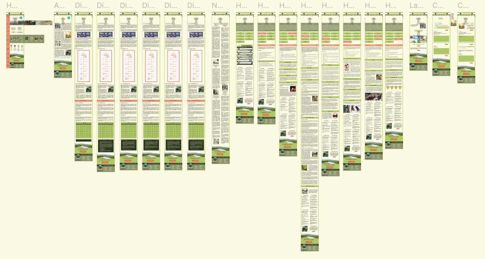
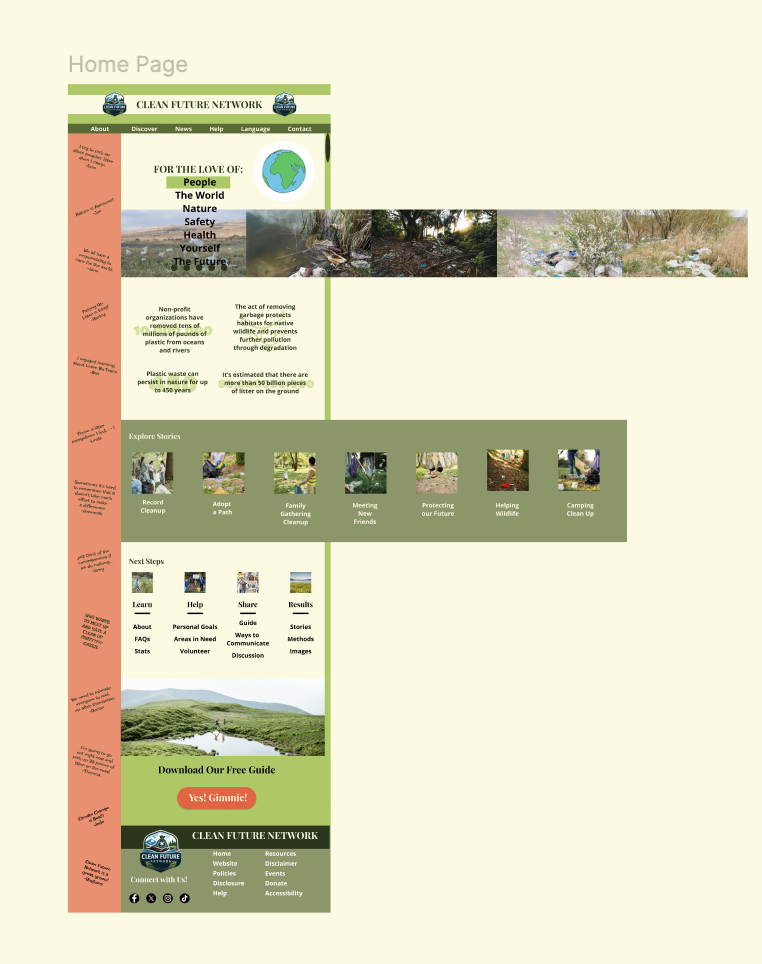
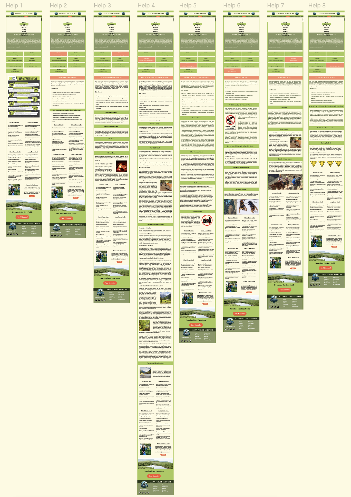
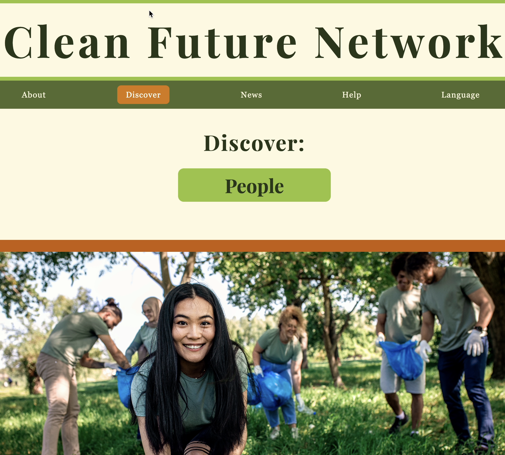

CLIENT
Clean Nature Network (concept)
ROLE
Brand Identity Designer
UI/UX Designer
Web Designer
DELIVERABLES
Brand Identity Development
Logo Design
Website Design
UI/UX Design
Interactive Prototyping
YEAR
2025
PROJECT OVERVIEW
Clean Future Network is a conceptual nonprofit brand and website design project created to explore how visual identity and digital experiences can support environmental organizations.
The goal was to develop a website experience that communicates the organization’s mission clearly while balancing environmental education with an engaging and welcoming visual identity. The project explored how layout, imagery, typography, and interactive elements can transform important information into an experience that encourages awareness and action.
DESIGN APPROACH
The visual direction combines natural imagery, warm earth tones, and structured content sections to create a design that feels both trustworthy and community-focused. A palette of greens, creams, and natural accent colors was used to reinforce themes of sustainability, while bold typography and photography help guide users through the organization’s message.
The website structure was designed around storytelling and accessibility, using clear navigation, informational cards, interactive sections, and visual hierarchy to make environmental topics easier to understand. Each page was developed to encourage exploration while creating a consistent digital identity that supports Clean Future Network’s mission of protecting communities and the environment.

High-fidelity website exploration developed in Figma, showcasing the overall Clean Future Network design system, page structure, and visual direction. This stage focused on creating a consistent digital experience through typography, color, imagery, and content hierarchy.

Homepage concept exploring the balance between environmental storytelling and user engagement. The design combines impactful photography, clear navigation, and educational content sections to create an approachable experience for visitors learning about environmental initiatives.

Help page exploration showcasing the eight individual Leave No Trace principle pages developed for Clean Future Network. Each page uses a consistent educational framework while providing unique content tailored to its specific environmental topic, including explanations, practical basics, personal goals, ways to share knowledge, and short- and long-term action steps.
The design approach focused on creating an intuitive learning experience through clear content hierarchy, supporting imagery, and repeatable page structures. This system allows users to easily navigate between principles while encouraging environmental awareness and meaningful action.
Logo exploration developed for Clean Future Network, focusing on creating a recognizable identity that communicates sustainability, community, and environmental responsibility. The final direction uses organic shapes and natural colors to reinforce the organization’s purpose.

Discover page design highlighting educational content, environmental statistics, and interactive storytelling. The layout was created to transform complex information into a visually engaging experience while maintaining consistency with the overall brand identity.